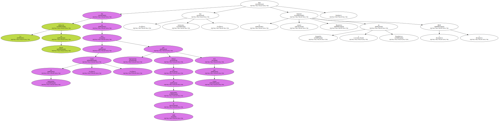
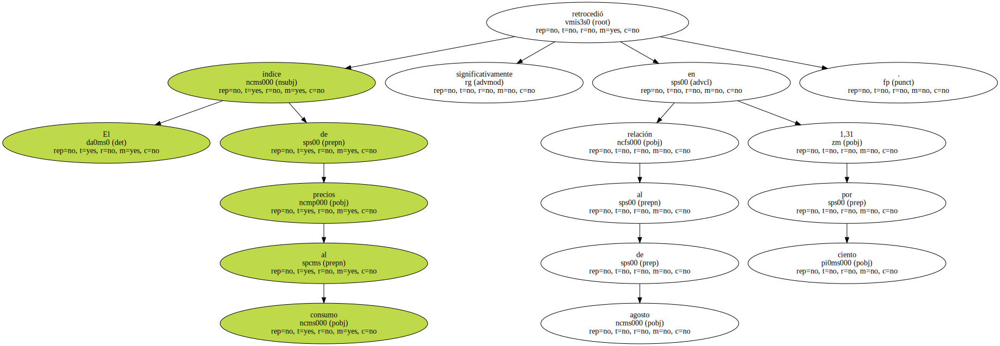
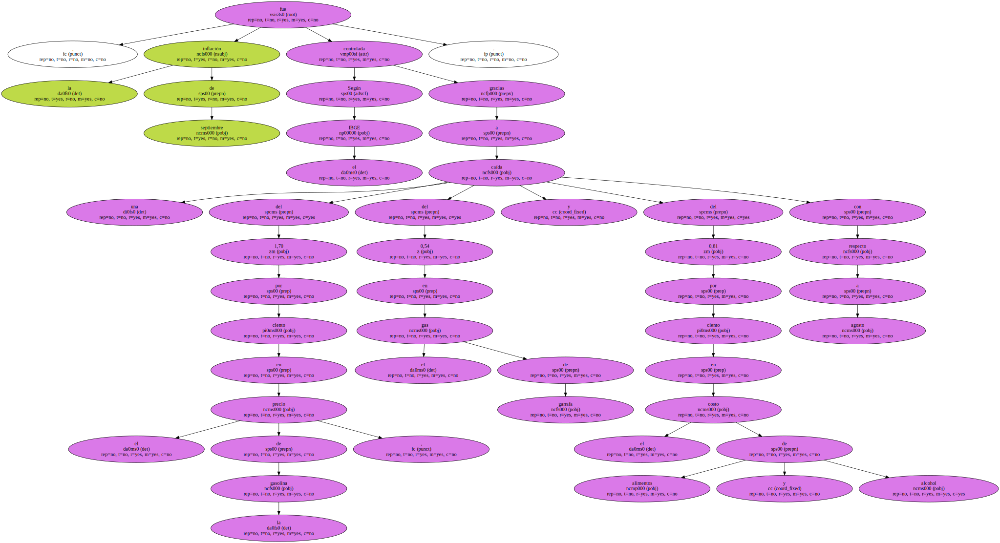
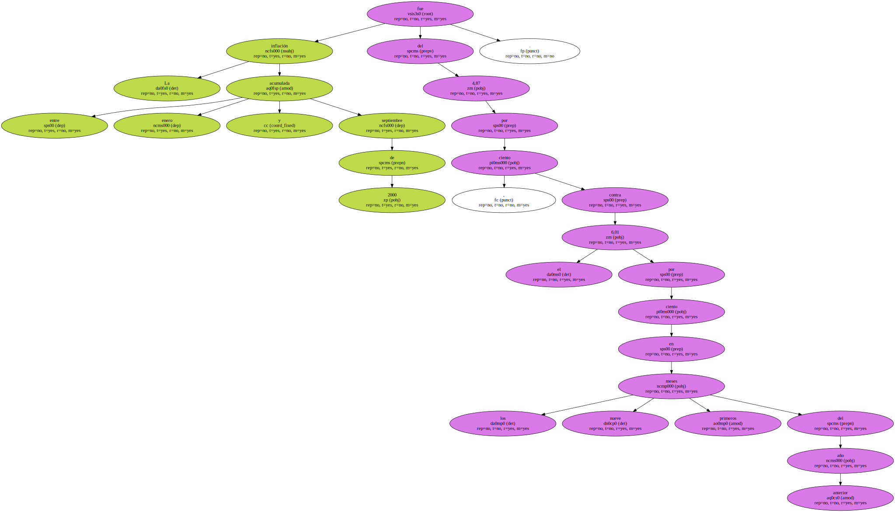
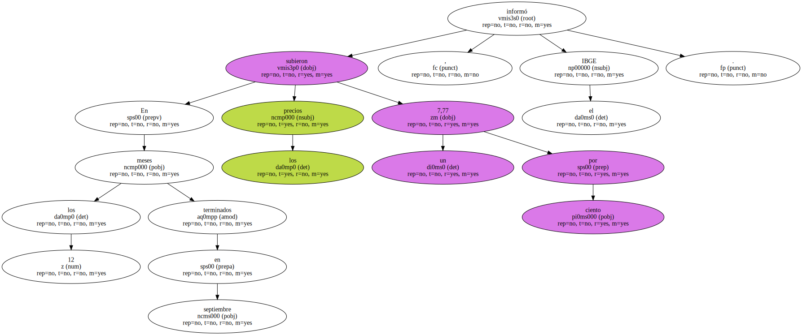
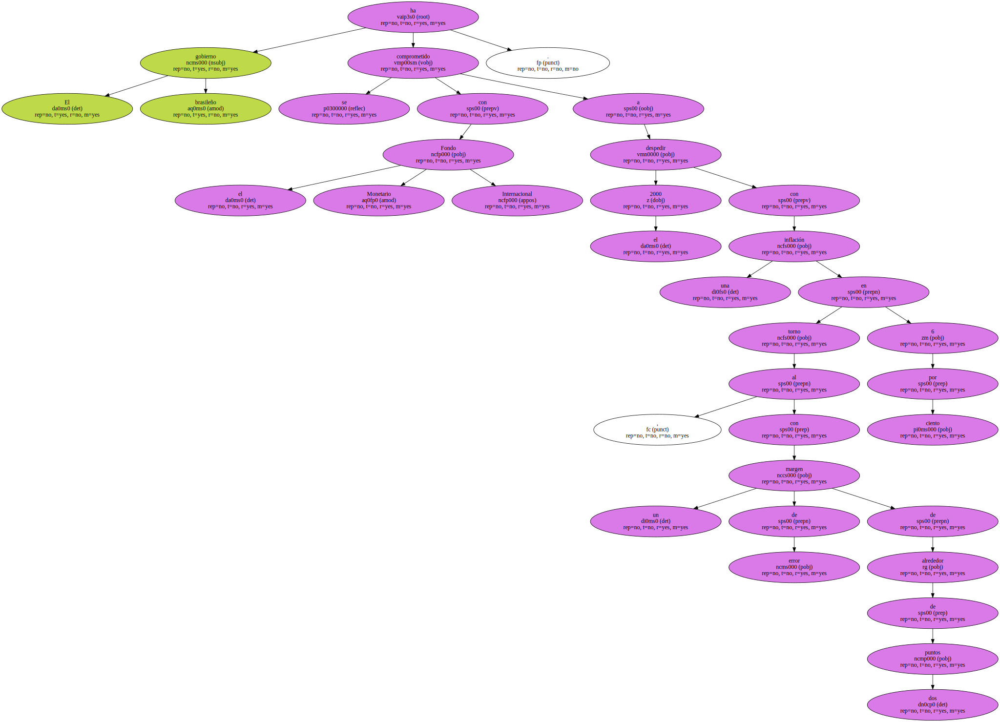
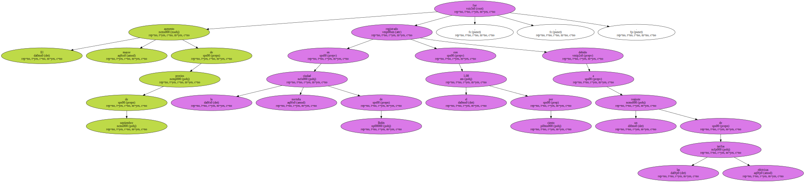

La inflación en Brasil fue de 0,23 por ciento en septiembre , ligeramente por debajo del 0,31 por ciento de septiembre de 1999 , dijo hoy , miércoles , el estatal Instituto Brasileiro de Geografía y Estadísticas ( IBGE ).
El índice de precios al consumo retrocedió significativamente en relación al 1,31 por ciento de agosto.
Según el IBGE , la inflación de septiembre fue controlada gracias a una caída del 1,70 por ciento en el precio de la gasolina , del 0,54 en el gas de garrafa y del 0,81 por ciento en el costo de alimentos y alcohol con respecto a agosto.
La inflación acumulada entre enero y septiembre de 2000 fue del 4,87 por ciento , contra el 6,01 por ciento en los nueve primeros meses del año anterior.
En los 12 meses terminados en septiembre los precios subieron un 7,77 por ciento , informó el IBGE.
El gobierno brasileño se ha comprometido con el Fondo Monetario Internacional a despedir el 2000 con una inflación en torno al 6 por ciento , con un margen de error de alrededor de dos puntos.
El mayor aumento de precios de septiembre fue registrado en la norteña ciudad de Belén , con el 1,08 por ciento , debido a un reajuste de las tarifas eléctricas.
La menor inflación fue detectada en la central Goiania , con el 0,07 por ciento.